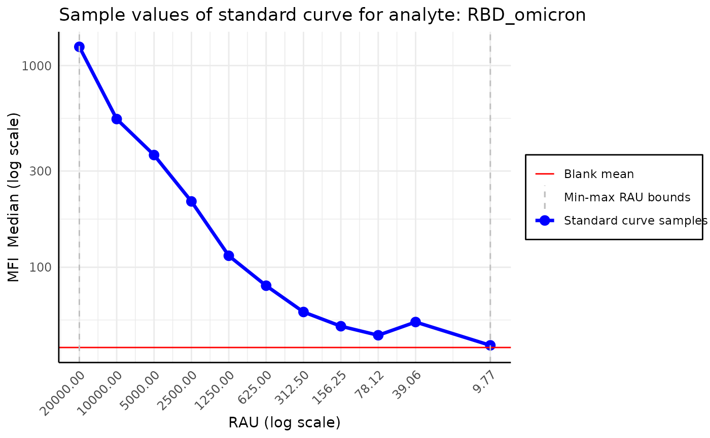

Typically, the MFI values associated with standard curve
samples should decrease as we dilute the samples. However,
sometimes in high dilutions, the MFI presents a non monotonic behavior.
In that case, MFI values associated with dilutions above (or equal to)
high_dose_threshold should be removed from the analysis.
For more information about this effect please refer to: Namburi, R. P. et. al. (2014) High-dose hook effect.
For the nplr model the recommended number of standard curve samples
is at least 4. If the high dose hook effect is detected but the number
of samples below the high_dose_threshold is lower than 4,
additional warning is printed and the samples are not removed.
The function returns a logical vector that can be used to subset the MFI values.
Value
sample selector (logical())
Examples
plate_filepath <- system.file(
"extdata", "CovidOISExPONTENT.csv",
package = "PvSTATEM", mustWork = TRUE
) # get the filepath of the csv dataset
layout_filepath <- system.file(
"extdata", "CovidOISExPONTENT_layout.xlsx",
package = "PvSTATEM", mustWork = TRUE
)
plate <- read_luminex_data(plate_filepath, layout_filepath) # read the data
#> Reading Luminex data from: /home/runner/work/_temp/Library/PvSTATEM/extdata/CovidOISExPONTENT.csv
#> using format xPONENT
#>
#> New plate object has been created with name: CovidOISExPONTENT!
#>
# here we plot the data with observed high dose hook effect
plot_standard_curve_analyte(plate, "RBD_omicron")

# here we create the model with the high dose hook effect handled
model <- create_standard_curve_model_analyte(plate, "RBD_omicron")
#> Warning: High dose hook detected.
#> Removing samples with dilutions above the high dose threshold.